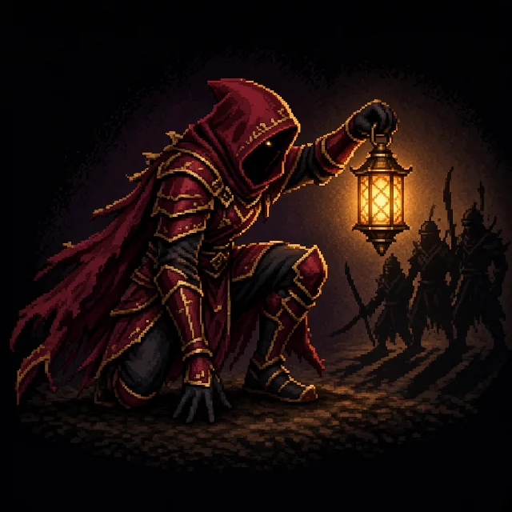
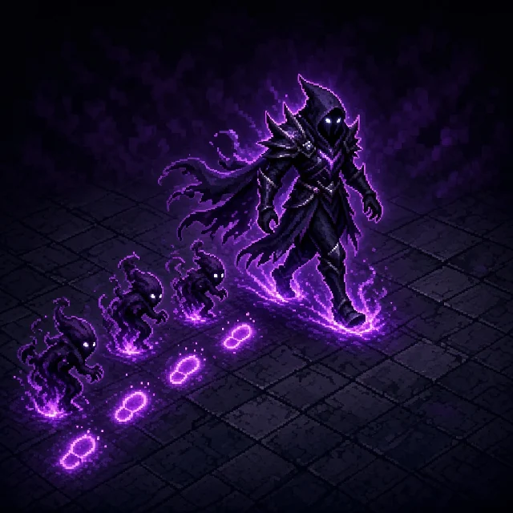
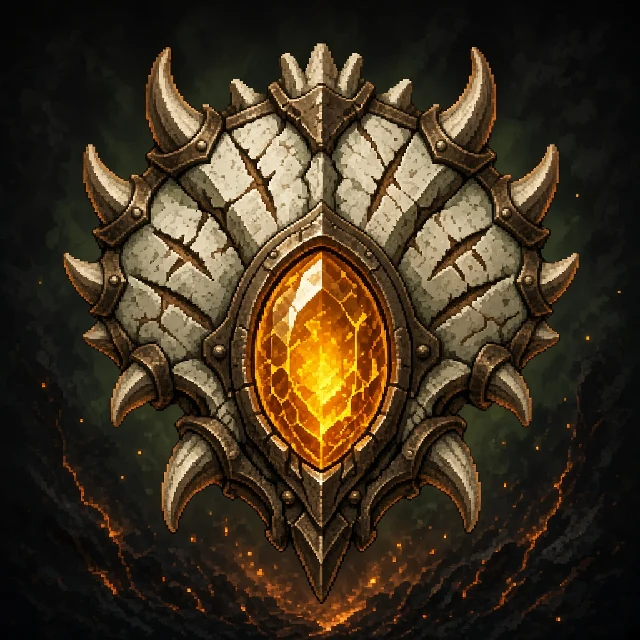

Reverse engineering · Electron 1.2.3 · browserify bundle · 13 October 2026
Duelyst dissected
How Duelyst runs its turns, its cards, its bosses and its economy, read straight from its own code. A store of ideas and pitfalls for a tactics game played with cards on a grid.
2,156modules recovered, with their paths
1,345files of rules engine, full bodies
819playable cards, 92 tokens
~344modifier classes doing all the work
Every claim carries its source: read means read in the code or produced by running it, inferred means interpreted. Unlike the Unity decompiles, this one has every method body. Only the variable names are minified.
01
What came out of the game
Duelyst on Steam is a web page in an Electron shell. All of the game code sits in one 10.6 MB line of minified JavaScript. Browserify keeps every module as a function in a big table, so the table can be read without running the game.
The module table is a plain object literal. Evaluating it in a sandbox creates the functions without calling any of them, and fn.toString() returns each module's source. Module paths come from the require maps.
The game is CoffeeScript compiled to JS. With a 10-line require, the rules engine boots in Node and the game computes its own card stats and text. read
Two loader traps: aliased modules call arguments[4][id][0].apply(…), so they need all 7 browserify arguments, and an unknown require name falls back to a module id. read
Only the server ever made decisions with hidden information: the practice AI, boss decks, reward rolls, pack odds. The client asks for them by API. read
02
A 9 × 5 board, two Generals, three springs
Both players are Generals standing on the board (2 attack, 25 HP). They can move, attack and be attacked like any minion. If a General dies, that player loses.
012345678
Selected
—
can move here (click to move)can attack this unitmana spring
Click any unit. Blue units are player 1, red are player 2, round ones are Generals. Movement, reach, Flying, Ranged and Provoke follow the engine's rules: a 2-step search through allies, melee reach on the 8 surrounding tiles, and Provoke freezing every enemy next to it. Turn order and mana are left out.
Start of turnMana refills to its cap (+1 per turn, max 9). On turns 4, 8 and 12 (P2: 5, 9, 13), then every turn, the Bloodbound Spell is ready.
ActEach unit can move then attack, but attacking uses up the move. Cards cost mana. One replace per turn.
ReplaceOne card back into the deck. The new draw is guaranteed to be a different card.
End of turnYou draw now, not at the start, so you plan the next turn with your full hand. Drawing from an empty deck deals 2 to your General.
The deck is never shuffled. Each draw picks a random card from the pile on the server, so there is no deck order that could leak. read
The (5,2) spring sits one column closer to player 2, who also starts with 3 mana instead of 2. Springs give +1 mana once, then disappear. read
The turn timer is 90 s plus 2 s for latency. When it runs out, only End Turn is valid. read
A safety rail: once 10 cards have been played in one turn with no damage dealt, playing another card is invalid. read
03
Everything is an action, everything that reacts is a modifier
The engine has one loop. Every change to the game is an Action, and every rule that reacts to one is a Modifier listening for events. That includes the counterattack: every unit carries a hidden ModifierStrikeback.
The counterattack is queued during the attack's before_action, so the defender hits back even when the first hit kills it. That gives simultaneous combat with no special case. Counterattacks are implicit attacks, and implicit attacks never trigger a counter, so it can't loop.
Watch it run
Units
Action queue (first runs next)
Action tree so far
Two real traces, recorded by running the game's own engine in Node (simulate.js). Every step below is an event the engine fired, in the order it fired them. Only the wording is ours.
Breadth-first by default. A reaction runs after everything already in the queue. A few bookkeeping actions (apply or remove a modifier) are marked isDepthFirst and run nested, right away. read
Fixed listener order. The current player reacts first, the General before other cards, then the rest in play order, then hand and deck. It doesn't depend on who subscribed first. read
Dead cards keep listening until the cleanup of the action that removed them. That's how a Dying Wish sees its own death. read
No self-trigger by construction. A modifier can never react to the action that created it or to that action's parents. read
Puppet clients. Only the server rolls dice. It records each sub-action under the event that created it. Clients run the same SDK but replay those records instead of creating actions. read
Opponent's cards are sent as id -1. Indices grow by random gaps (1 + rand × 100), likely so nobody can count hidden cards. readinferred
The save format is JSON.stringify(session). Runtime-only state lives in a non-enumerable _private. Snapshot and rollback take one line each. read
Replays are just the setup plus the list of steps. A client more than 10 s behind the server's step count is flagged as out of sync. read
04
A card is a stat line plus a list of modifiers
Each set file is one long if (id === …) chain. A branch sets the base stats, then attaches plain objects like {type: "ModifierDyingWishDrawCard"}. Most of the ~344 modifier classes pair one trigger with one effect: 75 Opening Gambit variants, 45 Dying Wish, 35 that watch for summons.
A multi-step card (a followup) snapshots the whole game when it is played. The next steps are free mini-cards. Cancelling restores the snapshot, so the card goes back to hand with nothing half-resolved.
Average ATK + HP per mana cost over the playable pool. Vanilla minions sit around 2 × mana + 2; each line of text costs about 2 stats. Only 1 to 3 vanilla minions exist per cost, so that line is noisy. read
Keyword
How it's built
Cards
Opening Gambit
fires on activation, not on play
117
Dying Wish
listens for its own DieAction
43
Provoke
aura that gives neighbours "Provoked", a move/attack veto
36
Flying
speed set to 14
29
Ranged
reach set to the whole board
23
Rush
not exhausted on summon
17
Backstab
bonus damage, and this one attack can't be countered
15
Forcefield
absorbs the first damage each turn
15
Celerity
one extra move and attack each turn
11
Artifact
3 charges on the General, −1 per hit taken, whatever the damage
48*
Playable pool, from stats_cards.md. *Destructible = artifacts. Movement and attack code never checks a keyword; it only reads the stats the keyword changed.
Each of the 6 factions has exactly 99 cards, 8 of them artifacts. Neutral has 225 cards, all minions. Average cost goes from 3.13 (Songhai) to 3.63 (Magmar). read
Dispel removes every removable modifier, including the card's own printed text. Artifacts, tokens, Sentinels and Structures survive. Walls die, because their Wall modifier was the unit. read
MECHAZ0R is a followup spell that appears once enough parts were played: parts − 5 × times summoned ≥ 5. read
05
Opponents: no AI in the box, bosses as one rule
The client has no decision-making AI at all: no search, no scoring. Practice and boss games are created on the server (ai_general_id, ai_difficulty) and the client only joins them. When the servers went down, the AI went with them.
Scripted agents drive the tutorial and the puzzles. Each round has its own list of actions. Units are named by tags ("general", "golem"), moves are relative, and the UI pulls the next action when the previous animation ends. An illegal scripted action is simply rejected, with no fallback. read
48 puzzles (3 tutorial lessons, 45 challenges across 10 gates). "Win in one turn" needs no engine rule: the opponent holds a 0-mana, 25-damage finisher aimed at your General. Ending your turn means losing. Failing rolls back to a snapshot and shows a hint picked by failure count. read
Puzzle HP is tuned to the exact damage. In "Shadow Ritual" the solution deals 3 + 6 + 2 = 11, and the enemy General has 11 HP. read
38 bosses, each a General with 1 to 3 undispellable modifiers. Archonis deals your unspent mana to you at end of turn. D3C's death is vetoed and replaced by a new General built from its parts. read
Paragon of Light keeps no phase flag. Its form is computed from current HP, so healing it undoes its keywords. read06
The meta: shared SDK, server dice
The progression formulas (ranks, faction XP, quest weights, the Rift curve) live in the SDK that client and server share, so the client numbers are very likely the real ones. Anything rolled, like pack contents or Gauntlet rewards, was decided on the server.
Gold comes in slowly: 20 for the first win of the day, 15 per 3 wins, plus two daily quests (20 and 50). That's about 135 gold a day at a 50 % win rate. inferred
Rarity
Craft
Disenchant
Common
40
10
Rare
100
20
Epic
350
100
Legendary
900
350
Mythron (1 copy max)
1,200
0
Gauntlet: pick 1 of 3 factions, then 30 picks of 1 card out of 3. The run ends at 3 losses; 7+ wins refunds the ticket. read
Ranked: rank 30 to S-Rank. No star loss in Bronze, no dropping out of a division within a season, and win streaks only count between ranks 25 and 6. read
In this build, Casual and Rift are switched off and hidden, and every mode plays the Legacy format. read
The Rift: a deck that levels. Each level grants one upgrade: swap a card for one of 6 offered. Rerolling the offer costs 25 × 2ⁿ spirit, and up to 10 offers can be banked for later runs. read
07
Design lessons
Take
Card = data, behaviour = modifiers. Write each trigger once and each effect once, then combine them in data. cards
Keywords as stat presets. Flying is speed 14, Ranged is reach ∞. The movement code never asks "does it fly?". cards
Every "you can't" is a veto. Provoke, Stun and Spellward all invalidate an action with a message and a tile. Error feedback comes for free. engine
Counter queued before the hit gives simultaneous combat with no special case, and Backstab is just one flag on the attack. engine
FIFO queue, fixed listener order, no self-trigger. Trigger order you can explain to a player. engine
Store damage, derive HP (HP = max − damage). Removing a +2 HP buff is then always correct. engine
The whole game state is one JSON. Save, snapshot, rollback and network all use the same format. engine
Puzzles with no special rules. A scripted finisher, a snapshot, graded hints. opponents
Boss = a General + one generic rule. Forms computed from HP, phase 2 by vetoing the death. opponents
Rift: the deck as a character. An upgrade per level, a doubling reroll cost, a bank of offers. meta
Draw at end of turn and one replace per turn that never gives the same card back. board
Avoid
The AI behind an API. It died with the servers. An opponent that must outlive the servers belongs in the build. opponents
A global session singleton. It makes it hard to simulate futures for an AI or run tests. Pass the session explicitly. engine
Two parallel cause trees (parent and resolve-parent) plus a trigger stack. Design one causal link. engine
No seeded RNG. Replays can't be checked offline. With integer state, seeding is cheap. engine
Stacking keyed on description text. Rewording a card can change how it plays. Key stacks on data. cards
Hand-written card text. It drifts from the behaviour. Generate it from the modifiers. cards
Two death hooks (Dying Wish vs Rebirth's), so "Dying Wish" synergies skip Rebirth. One hook, tagged. cards
Content mixed with presentation (sounds, FX, sprites in each card branch). Keep them in a separate table. cards
Invisible economy and dead modes shipped. Publish odds; feature-flag and delete. meta
08
Three new cards, played in the real engine
With the engine running in Node, the decompile becomes a workbench. These three cards use only pieces the engine already has, so it plays them unchanged. Each was loaded into a live game, played from hand and pushed into an edge case: 13 checks out of 13 pass. Two of them use modifiers that no collectible card ever carried.

3
Lantern Informant
Songhai Empire · Minion · Rare
Enemy minions around this are always Backstabbed.They also can't counterattack, whoever attacks them.
23
"Every back is turned to someone. I just tell you whose."
Built from
A generic radius-1 enemy aura carrying ModifierAlwaysBackstabbed. No collectible card uses that modifier; the only way to reach it was Massacre Artist's one-turn effect.
What the engine showed
A Kaido Assassin hitting from the front gets its +1 and takes no counter. The surprise: the Informant itself, with no Backstab, hits a 4/9 Golem and isn't countered either. Dispel removes the aura and everything it handed out.
Price
The budget for 3 mana with one line of text is about 6 stats; it has 5. A local, permanent cousin of a 4-mana Legendary, so Rare.

1
Shadowtrail
Abyssian Host · Spell · Common
Until your next turn, whenever an enemy minion is moved, summon a 1/1 Wraithling behind it.Counts moves you force too: teleports and swaps.
"Walk, then. It will be there when you stop."
Built from
Doom's spell class, aimed at your own General, carrying the Shadow Lord boss modifier ModifierEnemyTeamMoveWatchSummonEntityBehind, cut down to one turn and the Wraithling token.
What the engine showed
An enemy that walks leaves a Wraithling behind it. Nothing spawns on an occupied tile or off the board edge, enemy Generals don't trigger it, and it expires on time. It also fires when you teleport an enemy yourself with Mesmerize.
Price
It taxes the opponent's movement: they choose between handing you bodies and standing still. Next to Shadowstalk (2 mana, guaranteed), 1 mana may be generous; worth testing at 2.

2
Clutchwarden's Crest
Magmar Aspects · Artifact · Rare
Your General gains +1 Attack and Provoke.Breaks after 3 hits on your General, like any artifact.
"The mother does not chase. She stands over the clutch and waits."
Built from
Iridium Scale's artifact class carrying ModifierProvoke and a +1 attack buff. Magmar has no Provoke at all, and no printed card gives a General Provoke.
What the engine showed
An enemy next to your General can no longer reach the minion it guards and has to hit the General. Dispel can't touch it. The third hit breaks it and the Provoke goes with it.
Price
It limits itself: Provoke pulls hits onto your General, and every hit costs the artifact a charge. The more it protects, the faster it breaks.
The engine also caught a rule no card mentions. The first test showed the Crest breaking after one hit. Drawing from an empty deck damages your own General, and that hit costs every artifact a charge. The test decks were refilled; the card didn't change.
Card art made for this page with an image model (Grok Imagine via Higgsfield), prompted for Duelyst-like pixel art. None of it comes from the game.
09
What stays unknown
The practice and boss AI: server-side, not shipped. Boss decks and companion placement too.
Orb odds, prismatic chance, Gauntlet pick rarities and rewards, Rift points per game, season crate contents.
Whether the off-centre (5,2) spring was meant as a second-player catch-up. The code places it without comment.
Why card indices grow by random gaps. Hiding hidden-card counts is the likely reason, but no comment says so.